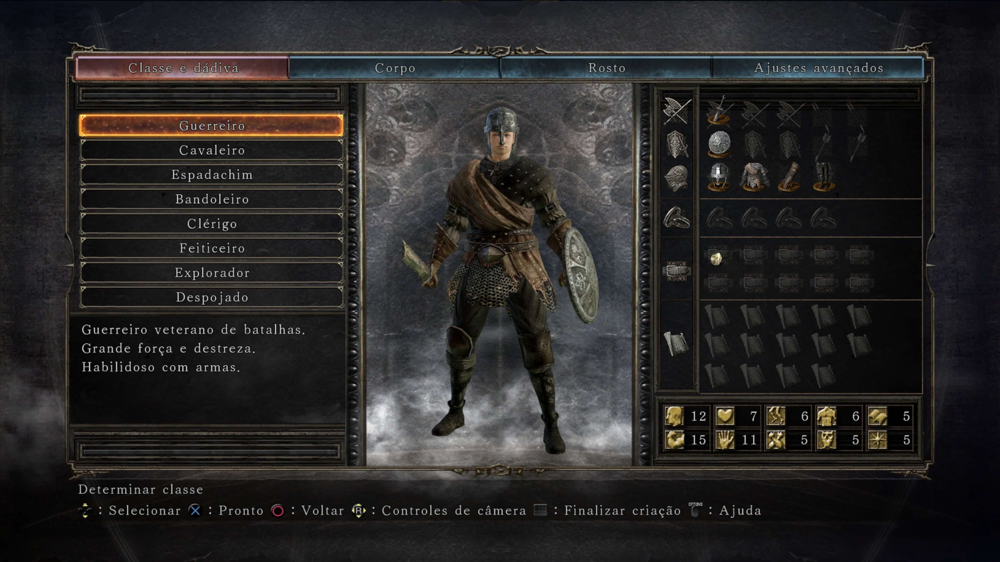
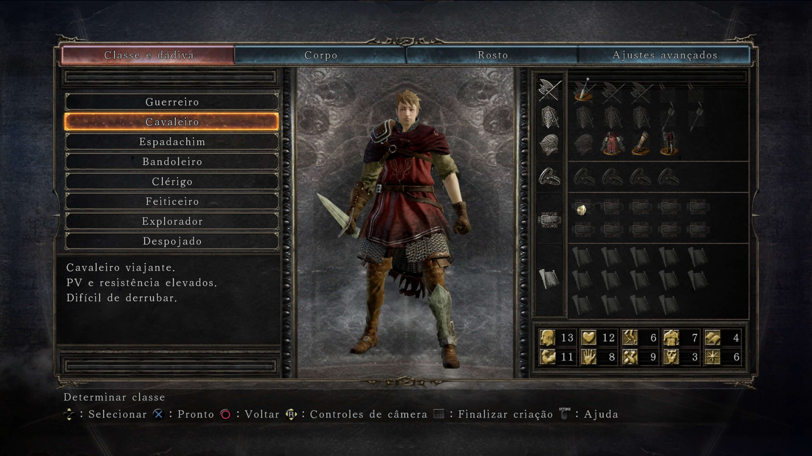
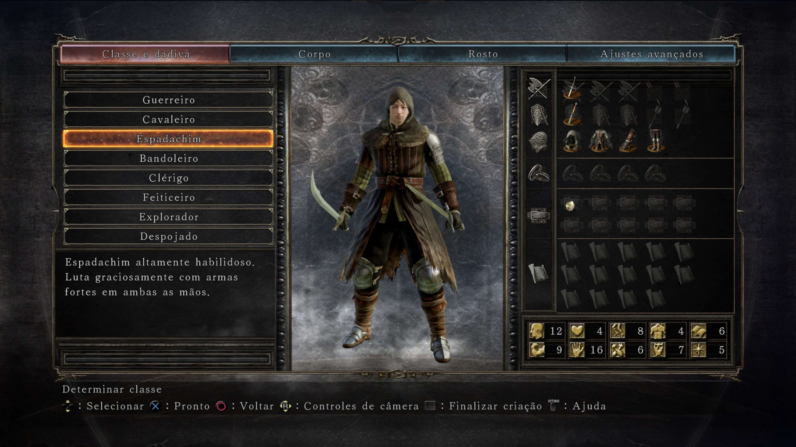
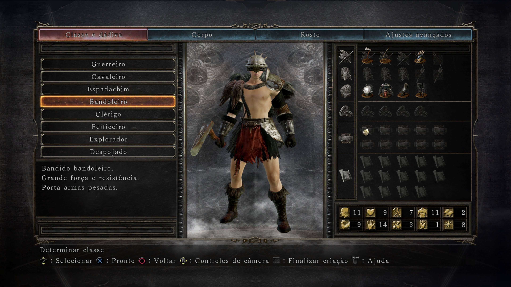
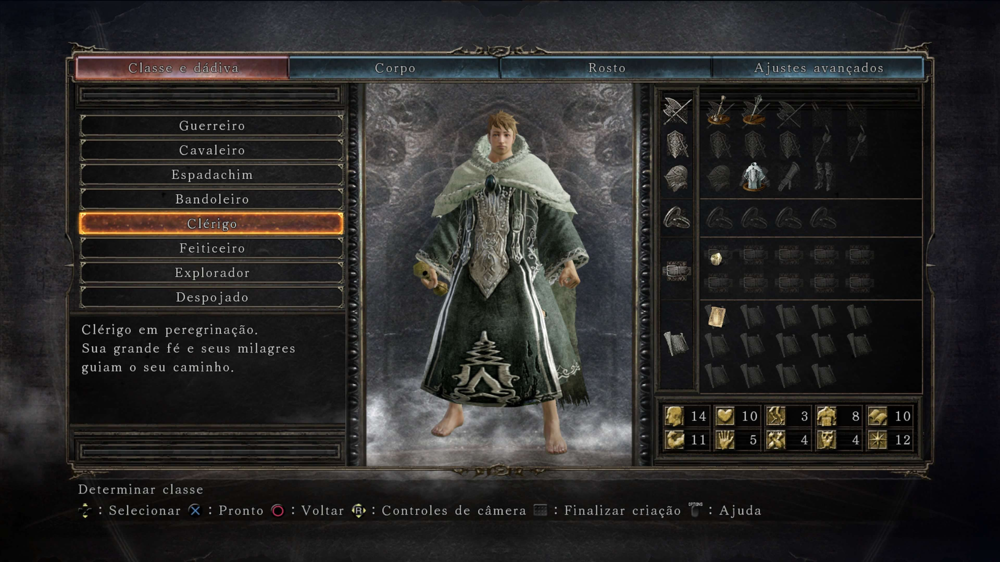
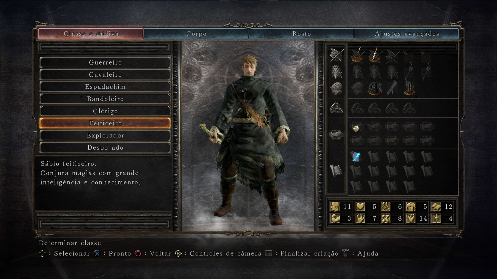
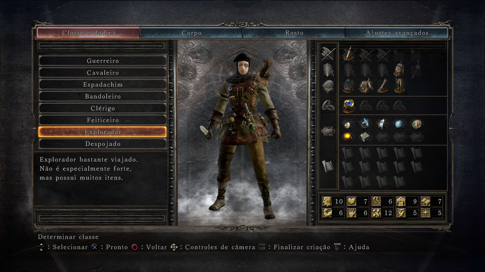
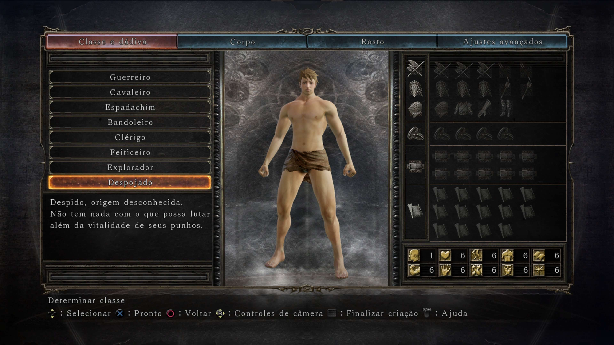

O Portador da Maldiçao
Voce chega a Drangleic buscando uma cura para a perda progressiva de suas memorias e de sua humanidade. O ciclo da chama deve ser mantido... ou encerrado.
Seja bem-vindo ao refúgio dos amaldiçoados. Explore as terras de Drangleic, seus segredos e seus perigos.
Explorar LoreVoce chega a Drangleic buscando uma cura para a perda progressiva de suas memorias e de sua humanidade. O ciclo da chama deve ser mantido... ou encerrado.
Governante que construiu um reino prospero sobre as cinzas dos Gigantes, mas acabou sucumbindo a escuridao e ao inevitavel esquecimento.
A rainha trazida das sombras. Fragmento de Manus, representaçao do desejo insaciavel por poder e pela chama Primordial.
Escolha o seu ponto de partida para encarar as provações de Drangleic:

Especialista no combate corpo a corpo. Começa com Altíssima Força e Destreza, pronto para empunhar armas pesadas e escudos desde o início.

Focado em sobrevivência e combate direto. Possui a maior quantidade inicial de Vigor (HP), sendo uma excelente escolha para iniciantes.

Mestre na arte de empunhar duas armas ao mesmo tempo (Power Stance). Alta Destreza e agilidade nas esquivas.

Guerreiro focado em arcos e machados. Possui a menor Inteligência do jogo, ideal para builds focadas puramentes em atributos físicos.

Devoto da fé que utiliza Milagres para se curar e punir inimigos. Começa equipado com uma maça e um frasco extra de cura mágica.

Especialista em feitiçaria de longo alcance. Começa com um cajado e o feitiço seta de Alma (Soul Arrow), ideal para combate à distância.

Inicia a jornada com uma vasta quantidade de itens de utilidade e cura no inventário, além de alta Adaptabilidade.

Começa no nível 1, totalmente pelado e sem equipamentos. Oferece o maior desafio no início, mas permite total liberdade de atributos.
Um santuario a beira do oceano, onde as ondas batem contra as falesias sob o por do sol eterno. O unico local de paz em toda Drangleic.